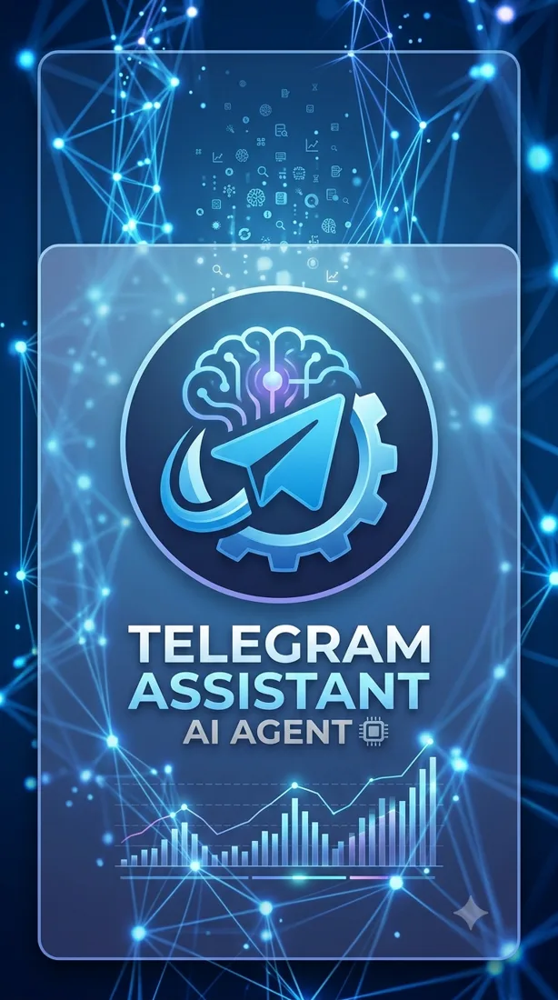
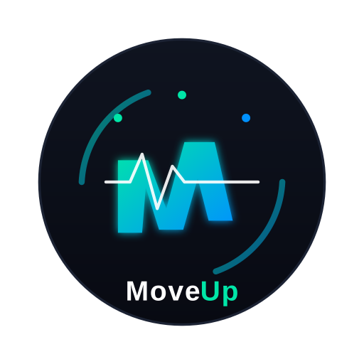
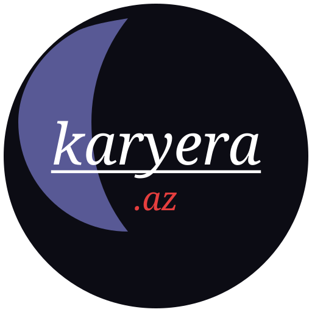

BUGHDAY RAHIMLI
Welcome to
my portfolio
Scroll or swipe to fly forward
Scroll or swipe to fly forward
An autonomous AI-powered assistant designed to automate Telegram channel management using Qwen 2.5.

🏃♂️ A hackathon SportsTech app that uses real-time pose detection 📹 to track workouts, gamifies fitness through city-based leaderboards 🏆, and rewards users with crypto tokens 🪙 redeemable for real prizes.

A desktop video converter built with FFmpeg and CustomTkinter.
An AI career assistant: from CV analysis to a personal learning roadmap.
